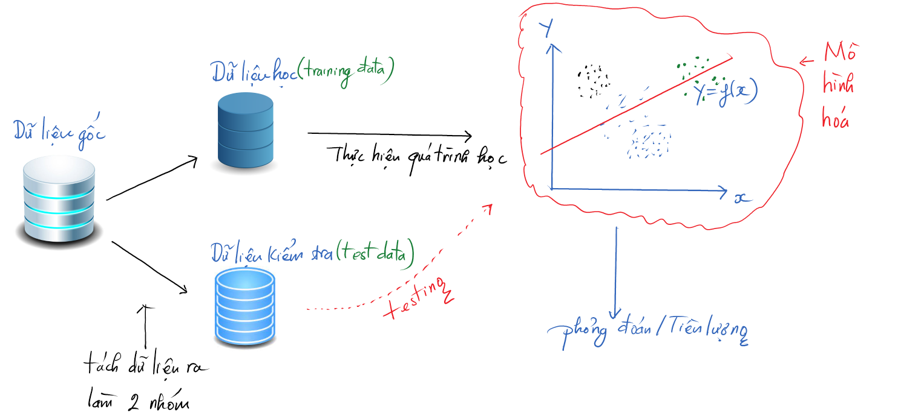

Làm thế nào để lựa chọn một mô hình phù hợp để giải quyết một bài toán kinh doanh/kĩ thuật cụ thể
Làm thế nào để đánh giá chất lượng và tính hiệu quả của các mô hình

Các ví dụ
Các phương pháp đã được đề cập đòi hỏi chúng ta phải có một bộ dữ liệu học về các tình huống mà chúng ta đã biết trước kết quả. Nhưng trong thực tế thì chúng ta chưa chắc đã biết chắc chắn các biến đầu ra. Thay vào đó, chúng ta muốn quan tâm tới các hình thái học (patterns) và các mối quan hệ trong dữ liệu để từ đó chúng ta có thể hiểu được phần nào các đối tượng cần quan tâm (khách hàng hay một vấn đề nào đó trong kinh doanh).
Các tính huống này thì liên quan đến một dạng tiếp cận trong phân tích dữ liệu gọi là “Học mà không có hướng dẫn/giám sát”. Với trường hợp này, chúng ta thường dùng các phương pháp nhóm (clustering).
Tiên đoán/ước lượng dựa chủ yếu vào thông số thống kê cơ bản:
Cây quyết định là một loại mô hình đơn giản dùng để tiên đoán theo từng mẩu (hay còn gọi là cành của cây). Dù đơn giản nhưng nó khá thú vị bởi vì GIẢ THUYẾT KHÔNG (Null Hypothesis) mà chúng ta cố gắng để làm tốt hơn thì thường là một hằng số cho cả gói dữ liệu, do đó chúng ta có thể xem cây quyết định như là một quá trình chia gói dữ liệu học thành những gói nhỏ và dùng hằng số đã được ghi nhớ cho từng gói dữ liệu nhỏ đó.
Phương pháp này thường được gọi là CART (Classification and Regression Trees) và được dùng để tiên lượng nhanh chóng cho cả các biến định lượng và biến định tính.
Các phương pháp lựa chọn các hàm đơn giản với cấu trúc cộng dồn (addictive structure) - Hồi qui tuyến tính - Hồi qui nhị thức
Các phương pháp này không những chỉ dùng để tiên lượng mà còn dùng để cung cấp thêm các thông tin liên quan đến mối quan hệ giữa các biến đầu vào và biến đầu ra.
Các phương pháp trong học máy liên quan đến việc xếp nhóm (cluster) và liên quan đến tính liên kết (association).
Các phương pháp này không nhằm tiên đoán chính xác kết quả, mà chúng thường để dùng để tìm ra/phát hiện các mối quan hệ và cấu trúc ẩn trong dữ liệu.